<title>Rex Chao directions</title>
<link rel="preconnect" href="https://fonts.googleapis.com">
<link rel="stylesheet" href="https://fonts.googleapis.com/css2?family=Hanken+Grotesk:wght@400;500;600&display=swap">
<style>
/* Layout: three stacked direction rows, each a strip of stills plus a big open button. Single dark look on purpose. */
:root{--bg:#06070A;--fg:#E6E9EE;--muted:#9AA1AC;--line:#20242B;--accent:#8FD3FF;--body:'Hanken Grotesk',system-ui,sans-serif;color-scheme:dark}
body{background:var(--bg);color:var(--fg);font-family:var(--body);font-size:16px;line-height:1.5}
main{max-width:1240px;margin:0 auto;padding-inline:clamp(16px,4vw,48px);padding-block:48px 80px;display:flex;flex-direction:column;gap:56px}
h1{font-size:clamp(26px,3.4vw,40px);font-weight:600;margin:0;text-wrap:balance;letter-spacing:-0.01em}
header p{margin:10px 0 0;color:var(--muted);max-width:62ch}
.dir{display:flex;flex-direction:column;gap:16px;border-top:1px solid var(--line);padding-top:24px}
.head{display:flex;justify-content:space-between;align-items:baseline;gap:16px;flex-wrap:wrap}
.head h2{margin:0;font-size:24px;font-weight:600}
.head p{margin:4px 0 0;color:var(--muted);max-width:60ch}
.open{color:var(--bg);background:var(--fg);text-decoration:none;font-weight:600;padding:12px 20px;min-height:44px;box-sizing:border-box;display:inline-flex;align-items:center;border-radius:2px}
.open:hover{background:var(--accent)}
.open:focus-visible{outline:2px solid var(--accent);outline-offset:3px}
.strip{display:grid;grid-template-columns:repeat(4,minmax(0,1fr));gap:8px}
.strip img{width:100%;aspect-ratio:16/10;object-fit:cover;display:block;max-width:100%}
@media (max-width:700px){.strip{grid-template-columns:repeat(2,minmax(0,1fr))}}
</style>
<main>
<header>
<h1>Three directions for the same flight through your world</h1>
<p>Same path in all three: Wren, your photos, records, the travel map, Tooey, builds, contact. Open one and scroll. Photos and Wren are stand-ins until the real ones go in.</p>
</header>

<section class="dir">
<div class="head">
<div><h2>A. Drift</h2><p>Everything is made of fine particles, like dust catching light. Cold and calm. Wide aerospace lettering.</p></div>
<a class="open" href="a.html">Open A and scroll</a>
</div>
<div class="strip">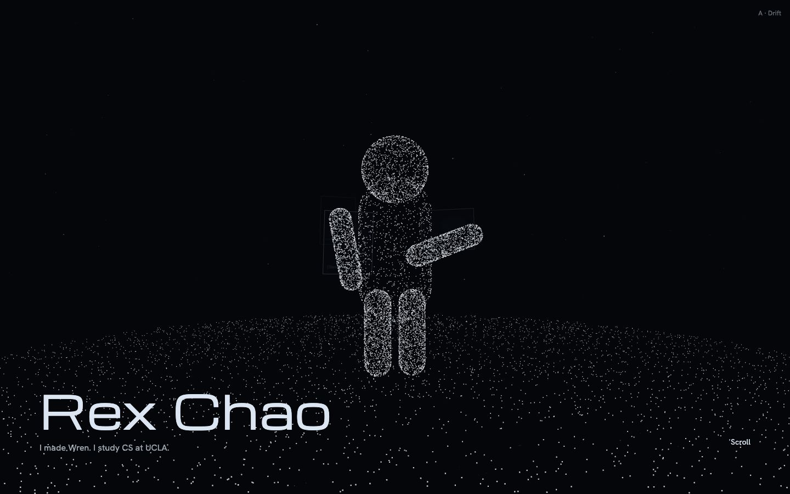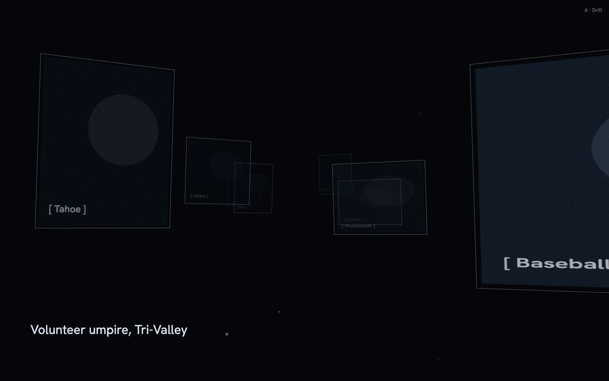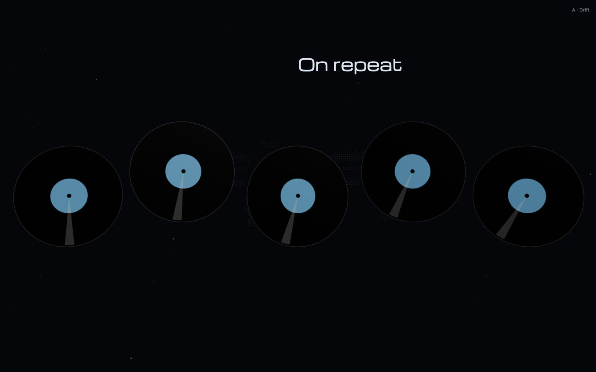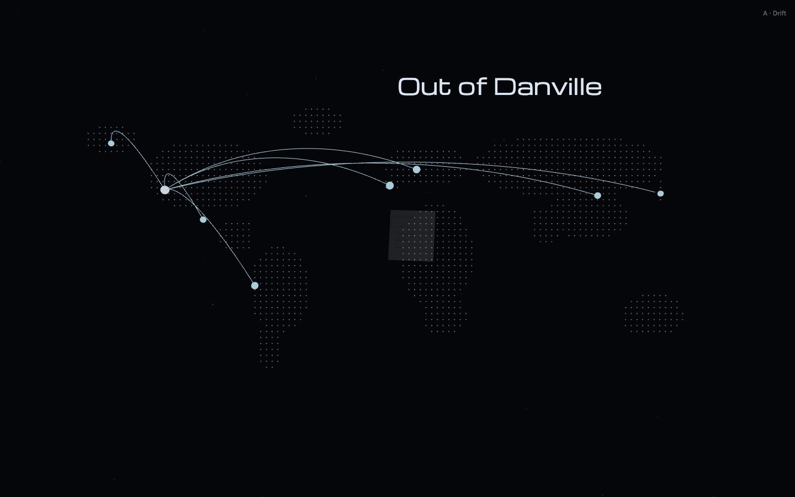</div>
</section>

<section class="dir">
<div class="head">
<div><h2>B. Chrome</h2><p>Polished metal objects that reflect the room. Heavy, confident, very physical. Bold wide type.</p></div>
<a class="open" href="b.html">Open B and scroll</a>
</div>
<div class="strip">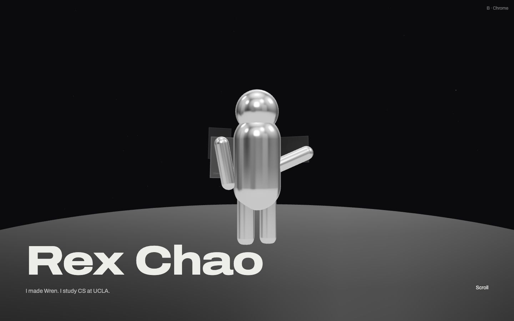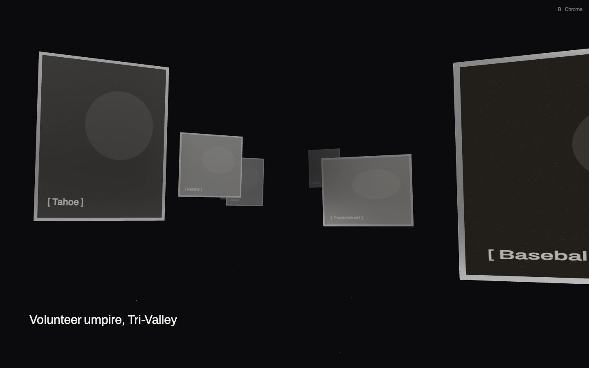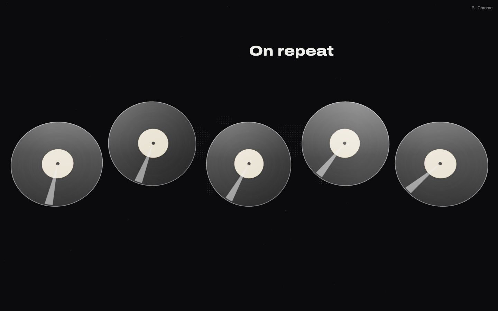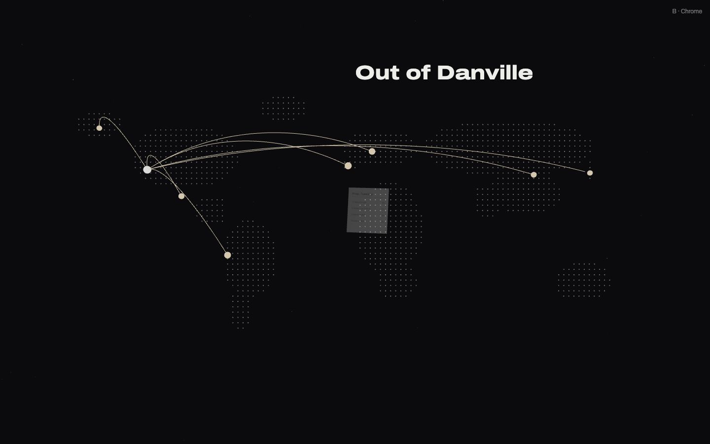</div>
</section>

<section class="dir">
<div class="head">
<div><h2>C. Signal</h2><p>Wireframes, and photos drawn as a dot pattern that sharpens as you get close. Like a scanner. The stretch option.</p></div>
<a class="open" href="c.html">Open C and scroll</a>
</div>
<div class="strip">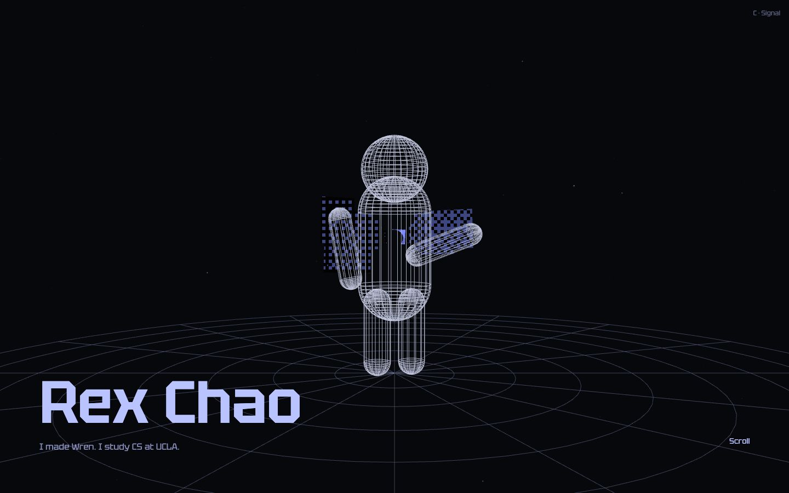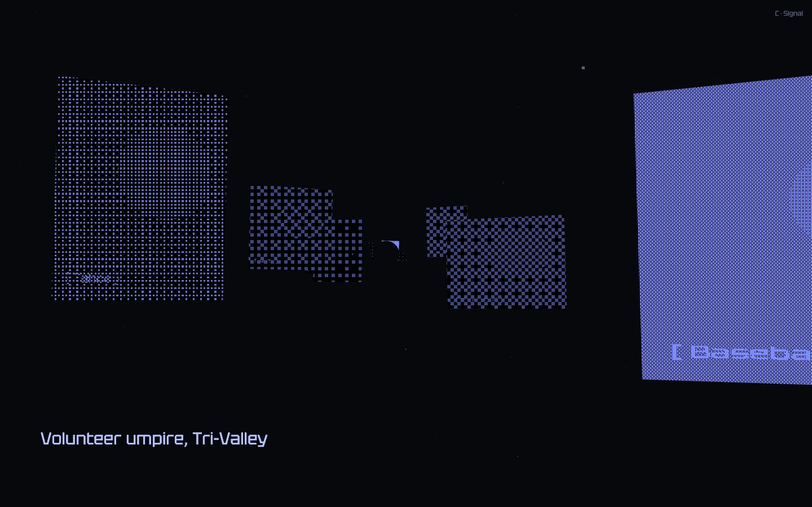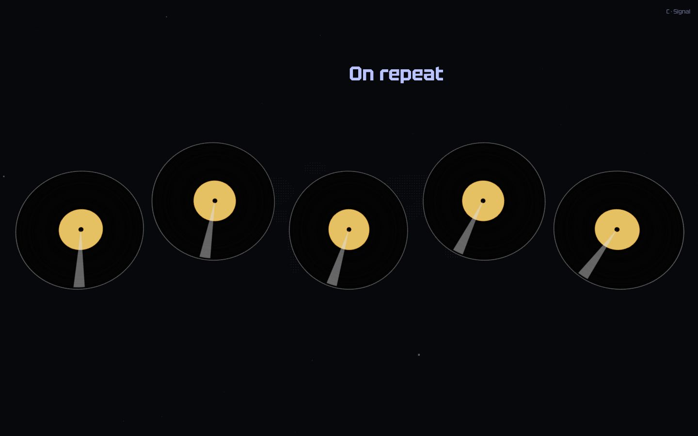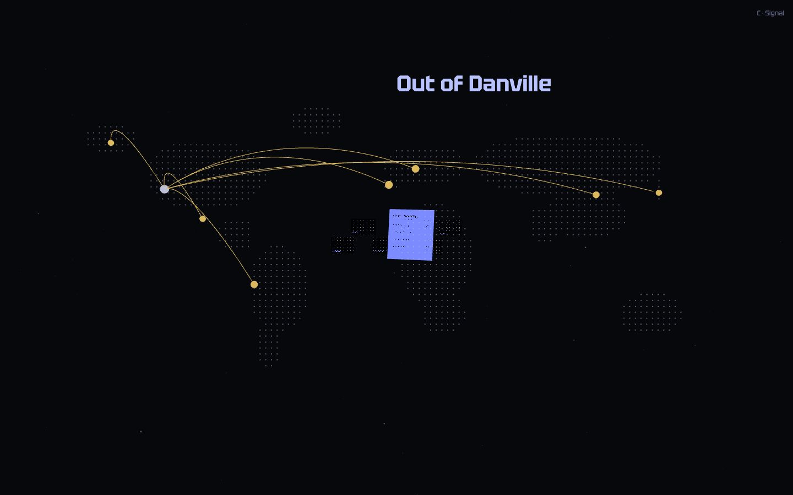</div>
</section>
</main>
